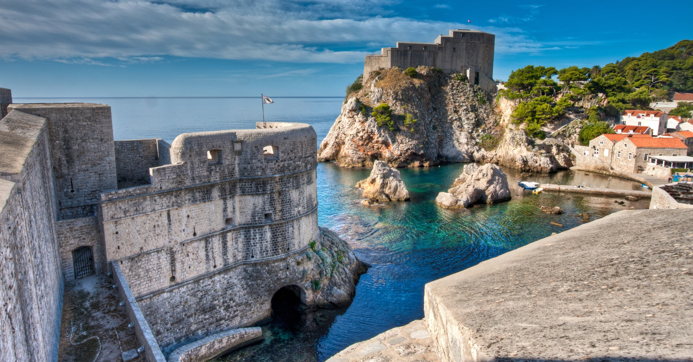

Sa svojim impresivnim zidinama Starog grada,
crvenim krovovima koji blistaju pod suncem i kristalno čistim plavim morem, Dubrovnik je prava
poslastica za sve avanturiste i ljubitelje kulture.
Ovaj grad, često nazvan "biserom Jadrana", svojom istorijom koja seže duboko u prošlost, osvaja srca
posetilaca iz celog sveta.
Šetajući kamenim ulicama Starog grada, osećaćete
se kao da ste zakoračili u bajku iz prošlosti.
Posetite zidine koje su vekovima čuvale grad od napada, istražite uske prolaze prepune istorijskih
znamenitosti i uživajte u fantastičnim pogledima sa starih tvrđava.
Ali Dubrovnik nije samo grad sa bogatom
istorijom - to je i grad koji obiluje životom i energijom.
Uživajte u ukusnoj hrani i lokalnim specijalitetima u brojnim restoranima i konobama, istražite
živopisne pijace i tržnice, ili jednostavno sedite u nekom od brojnih kafića uz obalu i posmatrajte
živopisni svet koji prolazi.
Ne zaboravite da se osvežite u kristalno čistom
moru, istražite obližnje plaže i uživajte u suncu i pesku.
Dubrovnik ima sve što vam je potrebno za savršen odmor - od fascinantne istorije do predivnih plaža,
od ukusne hrane do uzbudljive atmosfere.
Istorija Dubrovnika
Dubrovnik ima bogatu i fascinantnu istoriju koja
se proteže kroz vekove.
Ovaj grad, osnovan u drevnim vremenima, postao je značajna trgovačka luka u srednjem veku.
Tokom 15. veka Dubrovnik je razvio Republiku
koja je bila rival Mlečanima i koja je cvetala kao centar trgovine i kulture.
Grad je bio poznat po svojoj naprednoj kulturi i demokratskim vrednostima, uključujući i rano
ukidanje ropstva.
Tokom vekova, Dubrovnik je bio poprište brojnih
istorijskih događaja, a danas je jedan od najposećenijih turističkih destinacija na Jadranskoj obali
zbog svoje bogate istorije, impresivne arhitekture i spektakularne prirodne lepote.

Aktivnosti u Dubrovniku:
1. Posetite tvrđavu Minčeta
Jedan od najimpresivnijih bedema, odmah iza onog u Kini, okružuje Stari Grad Dubrovnika.
Izgrađen isključivo u svrhu odbrane grada od Mletačke Republike, danas je zid glavna atrakcija zbog
koje desetine hiljada turista posećuje grad svakog meseca.
Na zidu se nalazi nekoliko tvrđava, a najveća među njima je tvrđava Minčeta, koja pruža zadivljujući
pogled na unutrašnjost grada.
Iako zidovi mogu biti poprilično zauzeti, poseta tvrđavi Minčeta svakako vredi truda i plaćanja
ulaznice.
Minčeta
2. Prošetajte gradskim bedemima
Upustite se u avanturu hodanja duž bedema Dubrovnika i otkrijte čaroliju prošlosti koja živi u
svakom kamenu.
Ovi impozantni zidovi, podignuti još u 15. veku, svedoci su bogate istorije grada, odbranjenog od
brojnih izazova kroz vekove.
Prošetajte iznad terakotnih krovova Starog grada i uživajte u spektakularnim pogledima na kristalno
čisto Jadransko more.
Svaki korak na ovim bedemima nosi sa sobom osećaj pustolovine i otkrivanja skrivenih dragulja
Dubrovnika.
Ne propustite priliku da doživite jedinstvenu atmosferu ovih istorijskih zidina i stvorite
nezaboravne uspomene koje će vas pratiti zauvek.
3. Vožnja dubrovačkom gondolom
Za potpun doživljaj Dubrovnika, ne propustite priliku da posetite planinu Srđ, najvišu tačku grada.
Put do vrha možete započeti vožnjom kabinskom žičarom koja polazi sa spoljne strane gradskih bedema
i vodi do starog utvrđenja na planini Srđ.
Na vrhu ćete biti nagrađeni prelepim pogledom na grad i njegove karakteristične terakotne krovove.
U blizini se nalazi i restoran gde možete uživati u hrani i piću dok posmatrate pejzaž, bilo da je
to uz šoljicu kafe ili opušteni ručak.
U daljini možete primetiti otoke Lokrum i Elafit, dva bisera Jadranskog mora koje vredi posetiti
tokom boravka u Dubrovniku.
4. Prošetajte Stradunom
Stradun je nezaobilazna destinacija u Dubrovniku, budući da je glavna ulica grada.
Popločana drevnim mermernim pločama, Stradun je dom nekih od najimpresivnijih građevina Dubrovnika.
Srednjovekovna crkva Svetog Vlaha i Dubrovačka katedrala su arhitektonski dragulji Straduna, dok se
ispod ulice nalazi neverovatan vodovodni sistem star čak 600 godina.
Ne zaboravite posetiti Franjevački manastir i istražiti najstariju apoteku u Evropi!
Nakon što ste upoznali znamenitosti, opustite se u jednoj od brojnih bočnih ulica koje se seku sa
Dubrovačkim Stradunom.
Te uličice su ispunjene autentičnim restoranima, barovima i kafićima, savršenim za odmor uz kafu
između istraživanja!
5. Posetite Buža Bar
Dok šetate kroz uske uličice Starog grada, uživajući u njegovoj lepoti i atmosferi srednjovekovnog
doba, možda ćete slučajno naići na Buža Bar.
Nazvan po svom neobičnom ulazu - maloj rupi u gradskim zidinama (Buža), ovaj bar smešten je na
litici s pogledom na more.
Buža Bar je savršeno mesto za opuštanje i uživanje u mirnoj atmosferi koja karakteriše život u
Dubrovniku.
Ako ga ne pronađete slučajno, možete ga potražiti gledajući prema strani gradskih zidina koja gleda
na ostrvo Lokrum.
Tražite znak s natpisom "Hladna pića" i nećete pogrešiti!
6. Istražite lokacije snimanja Igre prestola
Snimanje serije "Igra prestola" u Dubrovniku bilo je izuzetno značajno za ovaj grad na jadranskoj
obali.
Dubrovnik je poslužio kao spektakularna kulisa za Kraljevu Luku, glavni grad Sedam kraljevstava.
Ova drevna mediteranska luka, sa svojim impozantnim zidinama i istorijskim građevinama, savršeno je
odgovarala viziji autora Džordža R. R. Martina.
Lokacije kao što su "sramne" stepenice, Crkva Svetog Spasa i Lovrijenac tvrđava postale su ikonične
destinacije za fanove širom sveta.
7. Posetite najstariju apoteku u Evropi
Datira iz 1317. godine i smatra se trećom najstarijom apotekom na svetu.
Nalazi se unutar dominikanskog manastira iz 14. veka.
Ova apoteka, koja je bila u upotrebi tokom doba Raguse, pružala je medicinske usluge lokalnom
stanovništvu i stranim posetiocima.
Danas, posetioci mogu da posete ovu istorijsku znamenitost i da vide staru farmaceutsku opremu,
medicinske knjige i druge artefakte iz perioda.
Takođe, unutar manastira nalazi se i Muzej apoteke koji čuva značajne artefakte iz 15. veka i pruža
uvid u bogatu istoriju ovog mesta.
Najbolja mesta za zabavu u Dubrovniku:
Copacabana Beach Club
Nema luksuznije opcije od Copacabane! Ova
ekskluzivna plaža nalazi se duž obale u obliku polumeseca, pružajući posetiocima spektakularne
poglede na Jadransko more.
Klub je osmišljen tako da gostima pruži vrhunsko iskustvo, uključujući luksuzne kabine, šampanjac i
trendi muziku.
Sky Bar
Sky Bar je popularno noćno mesto smešteno blizu
Pile kapije, jednog od glavnih ulaza u Stari grad.
Ovaj bar privlači posetioce svojim trendi dizajnom, modernim ambijentom i uzbudljivom atmosferom.
Vrata bara otvaraju se tek u ponoć, a zabava traje do ranih jutarnjih sati, što ga čini savršenim
mestom za one koji traže zabavu do kasno u noć.
Sky Bar poznat je po svojim spektakularnim žurkama i elektronskoj muzici koja će vas držati na
plesnom podijumu celu noć.
Revelin Culture Club
Revelin Culture Club je jedan od najpoznatijih i
najekskluzivnijih klubova u Dubrovniku, smešten unutar zidina stare gradske tvrđave, koja datira iz
15. veka.
Ovaj klub je postao simbol noćnog života grada te privlači posetioce iz celog sveta.
Svojim jedinstvenim ambijentom i energičnom atmosferom, Revelin je nezaobilazna destinacija za sve
ljubitelje zabave i elektronske muzike.
Gde jesti u Dubrovniku?
Dubrovnik je raj za ljubitelje hrane, sa
mnoštvom renomiranih restorana koji nude bogat izbor jela.
Bez obzira da li se nalazite unutar zidina Starog grada ili duž Straduna, očekuje vas izvanredno
gastronomsko iskustvo.
Evo nekoliko naših preporuka koje biste mogli posetiti tokom boravka u ovom prelepom gradu.
Restoran 360
Nalazi se na spektakularnoj lokaciji na zidinama
UNESCO-ve tvrđave, pružajući predivan pogled na luku i more.
Ovaj restoran ističe se svojim vrhunskim jelima inspirisanim mediteranskom kuhinjom, kao i modernim
interpretacijama tradicionalnih hrvatskih recepata.
Dobitnik je Michelinove zvezde, što dodatno potvrđuje kvalitet njegove kuhinje.
Poseta restoranu 360 pruža priliku da uživate u vrhunskoj usluzi, prefinjenom ambijentu i
gastronomskom iskustvu koje će ostati urezano u pamćenju.
Nautika
Nautika je luksuzni restoran smešten uz samu
obalu Dubrovnika, nedaleko od Pile kapije.
Ovaj ugledni restoran poznat je po svojoj izuzetnoj kuhinji i vrhunskoj usluzi.
Restoran je često posećivan od strane poznatih ličnosti, uključujući i pape i članove kraljevskih
porodica, što dodatno potvrđuje njegov ugled i kvalitet.
Ambijent restorana je elegantan, sa prekrasnim pogledom na more, što ga čini idealnim mestom za
romantične večere ili posebne događaje.
Nishta
U moru restorana, Nishta se ističe kao mesto za
vegetarijansku i vegansku hranu!
Prvi takav restoran u Dubrovniku, Nishta kombinuje ukuse zapadnih zemalja, uključujući Bliski Istok,
Kinu, Indiju i Meksiko, stvarajući zaista jedinstveni spoj istoka i zapada.
Uživajte u jelima koja variraju od falafela do samosa, kao i u bogatom izboru ukusnih salata u ovom
restoranu u Starom Gradu.
Atrakcije Starog grada:
Pile kapija
Pile kapija je jedan od glavnih ulaza u Stari grad Dubrovnika.
To je impozantan kameni luk koji se nalazi na zapadnom kraju Straduna, glavne ulice u Dubrovniku.
Ova kapija je izgrađena u 15. veku i služila je kao glavni prolaz kroz srednjovekovne zidine grada.
Danas je Pile kapija popularna turistička atrakcija i simbol grada. Posetioci mogu proći kroz ovu
kapiju i istražiti Stari grad sa svojim brojnim istorijskim znamenitostima, restoranima i
prodavnicama.
Dubrovačka katedrala
Dubrovačka katedrala, poznata i kao Katedrala Velike Gospe, jedna je od najvažnijih sakralnih
građevina u Dubrovniku.
Nalazi se u samom centru Starog grada Dubrovnika, blizu glavnog trga.
Ova impozantna crkva posvećena je Velikoj Gospi, a njena izgradnja započela je u 12. veku, iako je
više puta pretrpela različite obnove i dogradnje tokom istorije.
Unutrašnjost katedrale bogato je ukrašena umetničkim delima, uključujući slike i skulpture poznatih
majstora poput Tiziana, Rafaela i drugih.
Posebno je impresivan Glavni oltar katedrale, koji je ukrašen srebrom i pozlaćenim reljefima, kao i
relikvijama svetaca.
TVRĐAVA LOVRIJENAC
Tvrđava Lovrijenac se nalazi izvan Dubrovnika, duž njegove obale na stenovitom vrhu brda.
Smatra se jednim od najznačajnijih bedema u Dubrovačkoj odbrambenoj strukturi, zajedno sa zidinama
grada.
Izgrađena je u 11. veku kao odgovor na rastuću pretnju od morskih napadača.
Visoka preko 37 metara, Tvrđava Lovrijenac dominira obalom i pruža impresivan pogled na Jadransko
more i okolne oblasti.
Posetioci mogu istražiti unutrašnjost tvrđave, prošetati se po zidinama i uživati u panoramskom
pogledu na grad i more.
Takođe je često korišćena kao lokacija za različite kulturne događaje, poput pozorišnih predstava i
koncerata, što doprinosi njenom šarmu i privlačnosti.